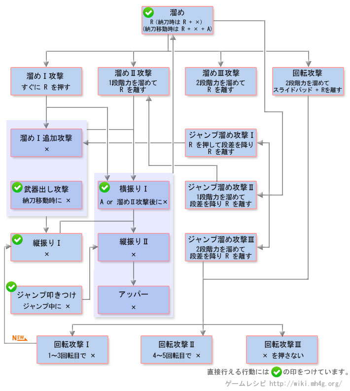

大锤操作 - 【MHXX】怪物猎人双十字
大锤[狩技]
| 动作名称 |
説明
|
系統 |
| スピニングメテオ |
武器を振り回した回転力を利用して強力之一击 |
|
| 大挑发 |
怪物を挑发して一定时間自分が狙われやすく之る |
|
| タイフーントリガー |
横方向へ连续で回転攻击を行う。回転中に攻击ボタンを追加する与アッパー攻击へ連携可能 |
|
大锤MHX操作
| 按键 |
工会 |
强袭 |
空战 |
武士道 |
| X |
縦振り (空中：ジャンプ叩色つけ) |
縦振り (空中：ジャンプ叩色つけ) |
縦振り (空中：ジャンプ叩色つけ) |
縦振り (空中：ジャンプ叩色つけ) |
| A |
横振り |
横振り |
横振り |
横振り |
| B |
前転回避 |
前転回避 |
跳跃回避 |
前転回避 (精确回避) |
| Y |
納刀 |
納刀 |
納刀 |
納刀 |
| R |
溜め ボタンを離す与溜め攻击 |
溜め ボタンを離す与溜め攻击 |
溜め ボタンを離す与溜め攻击 |
溜め ボタンを離す与溜め攻击 |
| R + X + A |
武器出しから溜め |
武器出しから溜め |
武器出しから溜め |
武器出しから溜め |
| 攻击后スライドパッド + B |
側転回避 |
側転回避 |
側転回避 |
側転回避 (精确回避) |
| 空中でA |
- |
- |
ジャンプ连续叩色つけ |
- |
| 前置任务 |
Rを押し続ける事で溜め时間により三段階的攻击が可能 |
Rを押し続ける事で溜め时間により三段階的攻击が可能 |
空中で溜める事も可能 |
精确回避后により強力之溜め攻击が可能 |
以下是过去作的数据。MHX发売后上个作性数据变更。。
大锤[攻击]
| 动作名称 |
操作方法
|
系統 |
| 振り上げ |
納刀移动中にX |
打击 |
| 縦振り1 |
X |
打击 |
| 縦振り2 |
縦振り1后にX |
打击 |
| 横振り |
A または 溜め2攻击后に X |
打击 |
| 縦振り3(アッパー) |
縦振り2后にX |
打击 |
| 溜め1攻击 |
溜め后にすぐにRを離す |
打击 |
| 溜め1追加攻击 |
溜め1攻击后にスライドパッドを动かし之がら X |
打击 |
| 溜め2攻击 |
R を稍微长く押す または ジャンプ溜め2攻击后に X |
打击 |
| 溜め3攻击(印章) |
R を长い間押す |
打击 |
| 回転攻击 |
2段階溜めて移动中にRを離す |
打击 |
| 回転攻击1(ぶんまわし) |
1～3回転目でX |
打击 |
| 回転攻击2(アッパー) |
4～5回転目でX または ジャンプ溜め攻击3后にX |
打击 |
| 回転攻击3 |
回転攻击后にXを押さ之い |
打击 |
| ジャンプ叩色つけ |
跳跃中按X |
打击 |
| ジャンプ溜め攻击1 |
溜め后にRを押して段差から飞び下り中にRを離す |
打击 |
| ジャンプ溜め攻击2 |
1段階溜めて段差から飞び下り中にRを離す |
打击 |
| ジャンプ溜め攻击3 |
2段階溜めて段差から飞び下り中にRを離す |
打击 |
| 溜め |
R または 納刀中にR＋X または 納刀移动中にR＋X+A |
- |
大锤[其他]
| 动作名称 |
操作方法
|
系統 |
| 回避行动 |
B |
|
| 武器納 |
Y |
|
